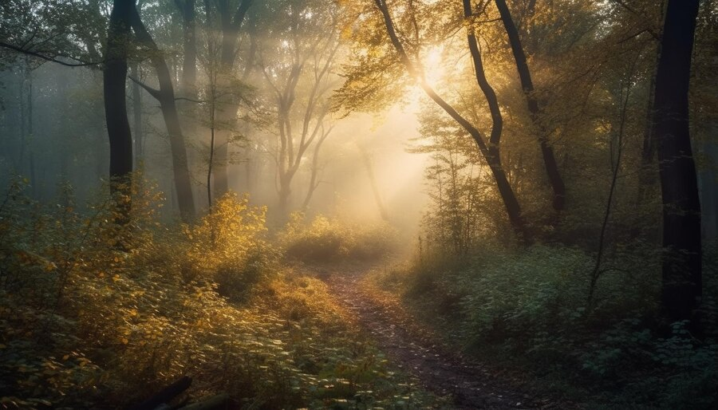

Você e seus amigos estão em uma viagem e se deparam com uma antiga mansão abandonada no meio da floresta. A noite está chegando, e a neblina cobre o chão. Vocês decidem explorar a mansão.
Ao entrar na mansão, vocês percebem que tudo está coberto de poeira e teias de aranha. O ar está pesado e há um leve som de sussurros ecoando. De repente, a porta atrás de vocês se fecha sozinha.
Vocês decidem não entrar, mas enquanto se afastam, um nevoeiro denso os envolve, e a estrada desaparece. Vocês estão perdidos na floresta. Ao tentar encontrar o caminho de volta, ouvem passos atrás de vocês.
Vocês caminham pelos corredores escuros e encontram uma porta entreaberta que dá para o porão. Sussurros aumentam de intensidade, e uma sombra se move no fundo do corredor.

Ao subir as escadas, elas rangem como se alguém estivesse acompanhando vocês. No topo, há dois quartos com as portas entreabertas. Um cheiro de mofo preenche o ar.
Vocês correm pela floresta, mas a cada passo, a neblina parece engolir mais o caminho. As árvores parecem se mover, e um som metálico pode ser ouvido. De repente, vocês encontram uma cabana isolada.
Ao descer para o porão, vocês sentem um cheiro forte de podridão. No fundo, uma velha cadeira de balanço se move sozinha. De repente, uma mão fria toca seu ombro.
Continuando pelo corredor, vocês encontram um velho salão de baile. O chão range, e uma pintura antiga de uma família os observa. Uma risada baixa ecoa pelas paredes.
O quarto está coberto de poeira e papéis velhos espalhados pelo chão. No canto, há um espelho quebrado. Ao olhar no espelho, você vê um reflexo que não deveria estar lá.

No segundo quarto, há uma cama velha e uma janela quebrada. Uma boneca de porcelana está sentada na cadeira, olhando diretamente para a porta. Ela pisca.
Vocês entram na cabana, mas ela está vazia. Apenas o som da chuva batendo no telhado. No entanto, há símbolos estranhos desenhados nas paredes com algo que parece ser sangue seco.
Vocês correm pela floresta sem olhar para trás. Eventualmente, a neblina se dissipa e a estrada aparece novamente. Vocês estão a salvo, mas algo na escuridão os observa.
Vocês seguem o som da risada até um armário antigo. Ao abri-lo, uma figura espectral salta em direção a vocês, atravessando seus corpos.
Vocês correm em direção à saída, mas a porta está trancada. Algo está se aproximando. Vocês ouvem passos pesados atrás de vocês.
Quando você se aproxima da boneca, seus olhos se movem, e ela sussurra algo inaudível. De repente, ela cai da cadeira e começa a rastejar em sua direção.
Vocês saem correndo do quarto e voltam para o corredor principal. A porta da mansão está aberta.
Vocês encontram uma janela aberta no corredor e decidem pular. Ao sair, vocês ouvem sussurros chamando seus nomes.
Vocês se escondem atrás de uma estante, mas os passos se aproximam. Algo está respirando pesado do outro lado.
Vocês correm para fora da mansão, o ar frio da noite os recebe. Ao olhar para trás, a mansão desapareceu. O que era real?
Vocês decidem explorar o último quarto, mas quando abrem a porta, uma luz branca cegante os engole. Ao acordarem, estão do lado de fora da mansão, mas com a sensação de que algo foi deixado para trás.